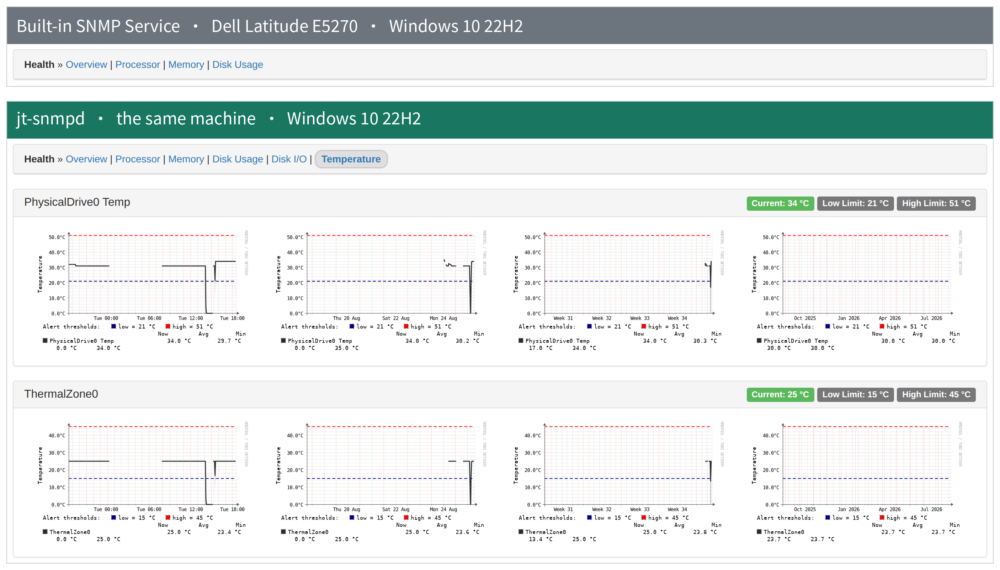
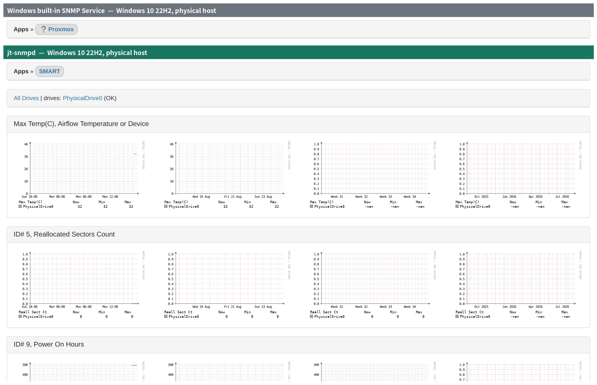
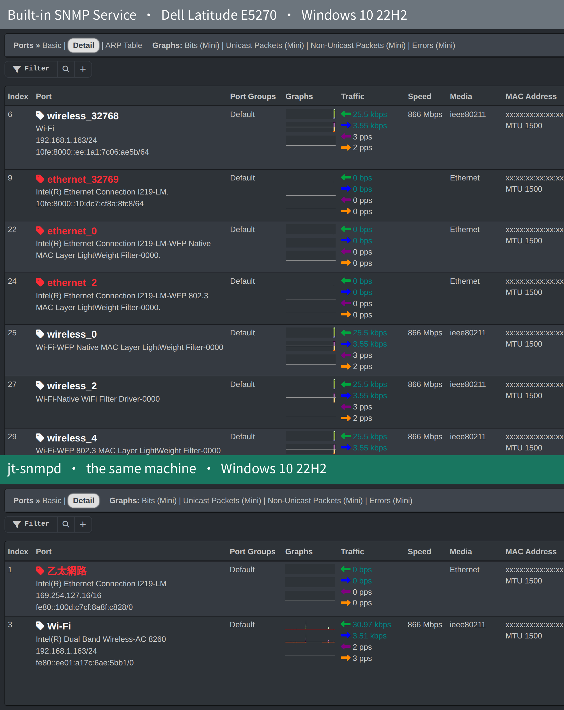
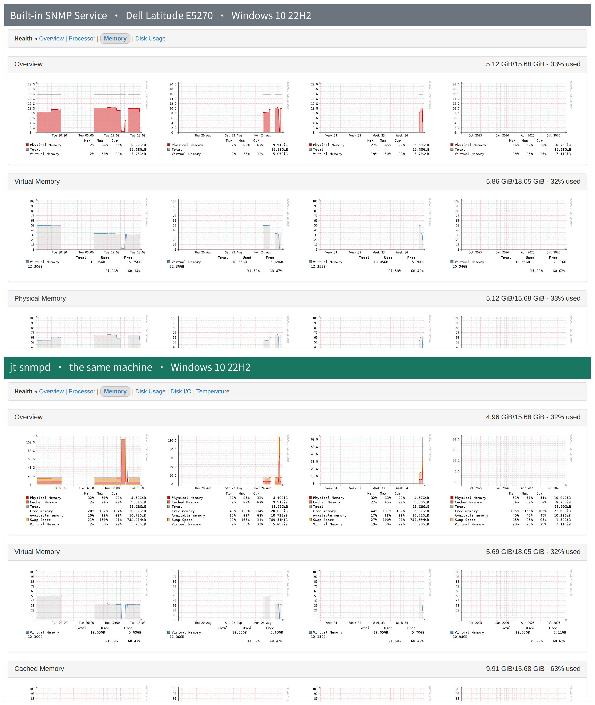

jt-snmpd 是一個 唯讀 的 Windows SNMP agent，以標準 MIB 把主機監控資料餵給 LibreNMS， 而且不必修改 LibreNMS。磁碟 SMART、ACPI 溫度區、硬體 inventory 全程走 SNMP，被監控端除了 jt-snmpd 本身之外，不必再裝 LibreNMS agent，也不必裝 smartctl。 jt-snmpd is a read-only SNMP agent for Windows that serves host monitoring data over standard MIBs — and needs no changes on the LibreNMS side. Disk SMART, ACPI thermal zones and hardware inventory all travel over SNMP, so beyond jt-snmpd itself the monitored host needs neither the LibreNMS agent nor smartctl.
Microsoft 已標記內建 SNMP Service 為停止支援。它支援 SET、把每一個 NDIS 篩選器驅動程式都當成獨立介面輸出、 沒有速率限制，而且來源檢查發生在封包解析之後。 Microsoft has deprecated the built-in SNMP Service. It supports SET, publishes every NDIS filter driver as a separate interface, has no rate limiting, and applies its source check after parsing the packet.
不覆寫 pysnmp 的 write_variables()，SET 請求連處理的程式碼都不存在，
直接丟棄且不回應，不提供任何可探測的訊息。
The agent never overrides pysnmp's write_variables(), so there is no code path
for SET at all. Requests are dropped without a reply, offering nothing to probe.
來源 ACL、封包大小上限、每來源 token bucket、外層 TLV 檢查，全部在 BER 解碼器之前。 BER 解碼器是攻擊面最大的一塊，未授權封包碰不到它。 Source ACL, size cap, per-source token bucket and outer TLV sanity all run before the BER decoder — the largest piece of attack surface never sees an unauthorised packet.
實測在 7,000 倍真實輪詢速率下，固定基準工作負載退化 0.41%。 單次完整 walk 12.5 ms CPU；LibreNMS 每 5 分鐘一次，實際佔用約 0.004%。 Measured at 7,000× the real polling rate, a fixed benchmark workload degraded by 0.41%. One full walk costs 12.5 ms of CPU; at LibreNMS's five-minute interval that is roughly 0.004%.
採集失敗時該列從快照消失，不回 0、不回前值。SMART 屬性沒量到就是 null，
在「重新配置磁區」填 0 的意思是「這顆碟很健康」，那是謊言。
When a collector fails its rows disappear from the snapshot rather than reporting zero or
a stale value. An unmeasured SMART attribute stays null: a fabricated zero in
"reallocated sectors" reads as "this disk is healthy".
以 NET_LUID 為主鍵長期保存的配發。Windows 原生索引在換驅動、拔插網路卡後會重編號， 那會讓 LibreNMS 的歷史 RRD 全部失去對應。 Indices are assigned from the persistent NET_LUID. Windows' native numbering changes when a driver is updated or a NIC is replaced, which orphans every historical RRD in LibreNMS.
CPU 核心溫度需要讀 MSR，那必須有驅動；業界慣用的 WinRing0 已列入 Microsoft 易受攻擊驅動封鎖清單。 為了一個溫度值在數百台主機裝一個能任意讀寫實體記憶體的驅動，是把監控工具變成提權管道。 CPU package temperature needs MSR access, which needs a driver — and the one everyone uses (WinRing0) is on Microsoft's vulnerable-driver blocklist. Installing something that can read and write physical memory on hundreds of hosts, for one temperature reading, turns a monitoring tool into a privilege-escalation path.
兩台都是實體 Windows 10 22H2，由同一套 LibreNMS 監控，LibreNMS 端未做任何客製。 截圖中的 MAC 位址已遮蔽。 Both hosts are physical machines running Windows 10 22H2, polled by the same LibreNMS instance with no customisation on the LibreNMS side. MAC addresses in the screenshots are redacted.
| LibreNMS 頁面LibreNMS page | 內建 SNMPBuilt-in SNMP | jt-snmpd | 說明Notes |
|---|---|---|---|
| 設備（entPhysical）Inventory (entPhysical) | 0 | 8 | 從 SMBIOS 解析機箱、主機板、CPU、DIMM、磁碟 Chassis, mainboard, CPU, DIMM and disks parsed from SMBIOS |
| 應用程式 › SMARTApps › SMART | 0 | 6 | 走 NET-SNMP-EXTEND-MIB，完全 SNMP，不需 smartctl Over NET-SNMP-EXTEND-MIB — pure SNMP, no smartctl |
| 健康情況 › 感測器Health › Sensors | 0 | 2 | 磁碟溫度，以及 ACPI 溫度區（主機板韌體自己定義的量測點，通常對應 CPU 周邊或機殼），兩者都帶韌體宣告的門檻值 Disk temperature, plus ACPI thermal zones (measurement points the mainboard firmware defines itself, usually near the CPU or across the chassis), both with the thresholds the firmware declares |
| 健康情況 › 磁碟 I/OHealth › Disk I/O | 0 | 2 | IOCTL_DISK_PERFORMANCE
IOCTL_DISK_PERFORMANCE |
| 健康情況 › 記憶體Health › Memory | 2 | 4 | 另加 Cached 與 SwapAdds cached memory and swap |
| System 圖表System graphs | 3 | 8 | 內建只有 Processes / Users / Uptime 三張，因為那些來自 HOST-RESOURCES。
Detailed Processor Usage、Context Switches、Interrupts、I/O、Swap I/O 這五張在
Linux 上來自 UCD-SNMP-MIB，Windows 內建服務沒有這個 MIB。jt-snmpd 以
NtQuerySystemInformation 補齊
The built-in service gives three (Processes, Users, Uptime) because those come from
HOST-RESOURCES. Detailed Processor Usage, Context Switches, Interrupts, I/O and Swap I/O come from
UCD-SNMP-MIB on Linux, and the built-in Windows service does not implement that MIB. jt-snmpd
supplies them from NtQuerySystemInformation |
| 健康情況 › 儲存Health › Storage | 2 | 2 | 筆數相同，差別在描述：jt-snmpd 以 GetVolumeInformationW
讀出真實磁碟區標籤與序號。中文標籤是實際會踩到的編碼問題，非 ASCII 一律以 UTF-8
編碼後送出，並已在 LibreNMS 端對端確認顯示正確
Same row count, different descriptions: jt-snmpd reads the real volume label and
serial number with GetVolumeInformationW. Non-ASCII labels are a real encoding
hazard, so they are encoded as UTF-8 on the way out and confirmed end to end through
LibreNMS |
| 連接埠Ports | 9 | 2 | 刻意較少：只輸出實體介面，不輸出 NDIS 篩選器驅動程式 Deliberately fewer: hardware interfaces only, no NDIS filter drivers |
| OID 總數Total OIDs | 6,507 | 776 | 刻意較少：其中 3,175 個是預設關閉的資訊揭露。查過 LibreNMS 原始碼後
可以確定，已安裝軟體、執行中處理程序、連線表這三類在 LibreNMS 沒有任何取用端，
送出去也不會變成任何頁面；只有 ARP 有（ArpTable 模組），可用設定開啟。
逐項查證
Deliberately fewer: 3,175 of the gap is information disclosure that is off by
default. Checked against LibreNMS's source, installed software, running processes and connection
tables have no consumer in LibreNMS at all and would become no page if published; only ARP
does (the ArpTable module), and it can be switched on.
Item by item |




MSI 完全自包含，安裝時不上網抓任何東西。安裝程式會偵測內建 SNMP Service， 沿用它的 community 與 sysContact / sysLocation，然後停用它（停用，不移除）， 解除安裝時自動還原。 The MSI is fully self-contained — it downloads nothing during installation. It detects the built-in SNMP Service, carries over its community and sysContact/sysLocation, then disables it (disabled, not removed) and restores it on uninstall.
.sha256，安裝前請先核對。
Every release ships a .sha256; verify it before installing.
本安裝檔未經 Authenticode 簽章，目前沒有申請憑證的計畫。點兩下安裝時
SmartScreen 會出現警告，UAC 提示的發行者會顯示為「不明」。完整性請改以 .sha256
驗證；WDAC / AppLocker 環境的處理方式（雜湊規則、自行簽章）見
程式碼簽章。
This installer is not Authenticode signed, and no certificate is planned.
SmartScreen warns on a double-click and the UAC prompt shows an unknown publisher. Verify the
.sha256 instead; for WDAC and AppLocker environments see
Code signing for the hash-rule and sign-it-yourself routes.
安裝程式會逐步詢問安裝路徑與監控設定。兩個必填的設定是管理網段與
community，它們決定誰查得到這台主機。事後也可以編輯
C:\ProgramData\JT-SNMP\config.json 再重新啟動服務。
The installer asks for the install location and the monitoring settings.
The two required values are the management networks and the community string —
together they decide who may query this host. Both can be changed afterwards by editing
C:\ProgramData\JT-SNMP\config.json and restarting the service.
下面這道指令是命令列 / 無人值守安裝用的，/qn 表示不顯示任何介面。
同一顆 MSI 與同一組屬性也直接適用於群組原則（GPO）軟體派送：以
msiexec /qn 的形式派送，安裝過程以 SYSTEM 身分執行，不會有任何提示。
This is the command-line / unattended form; /qn means no
interface at all. The same MSI and the same properties are what you use for
Group Policy software deployment: deployed in this form the installation runs as SYSTEM
with no prompts.
msiexec /i jt-snmpd-0.9.2-x64.msi /qn MANAGEMENTNETWORKS=10.0.0.0/24 COMMUNITY=your-community以 GPO 派送時，請把 MSI 放在網域內的共用資料夾， 並確保電腦帳戶對該資料夾有讀取權限。從內部共用資料夾安裝也不會帶網頁標記（Mark of the Web）， 因此不會遇到 SmartScreen。 For GPO, place the MSI on a domain file share and make sure computer accounts can read it. Installing from an internal share also avoids the Mark of the Web, so SmartScreen never appears.
萬一安裝或解除安裝走不完，手動移除 逐步列出安裝程式做過的每一件事，以及如何用手做完。 If an install or uninstall will not complete, Manual removal lists every step the installer performs and how to do each of them by hand.
SMART 的探索模組在 LibreNMS 預設是關閉的。沒有啟用時， jt-snmpd 照樣供應資料，但不會有人來取，裝置的「應用程式」分頁不會出現 SMART。 The discovery module that finds SMART is off by default in LibreNMS. Until it is enabled, jt-snmpd still serves the data but nothing collects it, and no SMART entry appears under Apps.
applications），把它打開。
Find applications and switch it on.若偏好命令列，等效的指令是： If you prefer the command line, the equivalent is:
lnms config:set discovery_modules.applications true
輪詢端的 poller_modules.applications 預設就是開的，
所以探索過一次之後就會持續更新。
The polling side, poller_modules.applications, is on by default,
so once discovery has run the data keeps updating.
實測放大倍率、權杖權限縮減，以及未緩解風險的誠實清單 Measured amplification factor, privilege stripping, and an honest list of what is not mitigated
包含 jt-snmpd 刻意回報「更少」的地方與原因 Including every place jt-snmpd deliberately reports less, and why
安裝檔未簽章：安裝時會看到什麼，以及 WDAC / AppLocker 環境怎麼處理 The installer is unsigned: what you will see at install time, and how to handle WDAC and AppLocker environments
安裝或解除安裝走不完時，安裝程式做過的每一件事該怎麼用手做完 When an install or uninstall will not complete: every step the installer performs, and how to do each by hand
Bandit / Semgrep / pip-audit / SBOM，以及可提交的報告格式 Bandit, Semgrep, pip-audit and SBOM, plus the report format a security review will accept
個資 / 機密掃描、圖片人工審閱、不公開內容清單 Privacy scanning, image review, and what never gets published
L0–L7 分層、797 項自動測試、40 項實機生命週期檢查 L0–L7 levels, 797 automated tests, 40 on-hardware lifecycle assertions